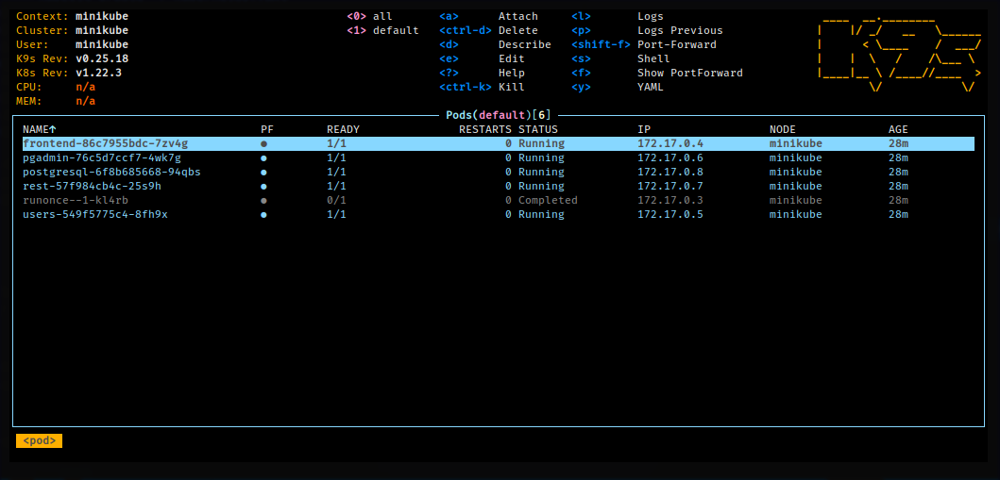

Deploy usando Kubernetes (e Minikube)
Você pode realizar deploy do projeto usando Kubernetes. Nos passos a seguir, será mostrado como realizar um deploy usando a ferramenta Minikube, para instalação do Kubernetes localmente.
ATENÇÃO: Para detalhes não dispostos nesta página, veja a documentação oficial do Kubernetes.
Introdução
Kubernetes é uma ferramenta sofisticada de orquestração de contêineres. O Minerva System é planejado para que seu deploy seja feito utilizando o Kubernetes.
Para realizar a configuração localmente, fui utilizada a ferramenta Minikube. Portanto, os comandos aqui abordados partem do pressuposto de uma instalação local do Kubernetes via Minikube, e podem ser
Objetivo
O deploy usando Kubernetes é planejado desde o início do projeto, sendo uma das formas de estado da arte de deploy de aplicações web. Para simular este cenário, utilizamos uma instalação local do Kubernetes via Minikube.
Ainda que Minikube não seja exatamente um servidor do Kubernetes em produção, boa parte do que será aqui discutido poderá ser utilizado no momento do deploy para produção.
Dependências
Você precisará ter instalado:
- Docker versão 20.10 ou superior;
- Docker Compose versão 2.2.3 ou superior;
- Kubectl versão 1.23.3 ou superior;
- Minikube versão 1.24.0 ou superior;
- k9s versão 0.25.18 ou superior (opcional).
A instalação do k9s é opcional, sendo uma ferramenta de monitoramento e gerencialmento do Kubernetes via linha de comando.
Iniciando o Minikube
Caso você esteja testando localmente, comece executando o Minikube.
As configurações a seguir iniciam um cluster local via Minikube, usando
KVM2 como backend. Você poderá também usar os backends docker ou
virtualbox, à escolha.
minikube start \
--vm-driver=kvm2 \
--disable-optimizations=false \
--extra-config=kubelet.housekeeping-interval=10s
minikube addons enable metrics-server
Se você quiser parar o Minikube:
minikube stop
Igualmente, se quiser remover o cluster:
minikube delete --all
Problemas com Libvirt e AppArmor
Caso você tenha problemas para inicializar a máquina virtual com KVM2,
pode ser que sua instalação local do AppArmor esteja interferindo com
o libvirt.
Como ferramenta paliativa à configuração do AppArmor para o libvirt,
você poderá colocar os utilitários usados pelo Minikube no modo complain.
Lembre-se de que isso é necessariamente detrimental à segurança do sistema.
sudo aa-complain /usr/sbin/libvirtd
sudo aa-complain /usr/libexec/virt-aa-helper
Estrutura do Cluster
A seguir, trataremos da estrutura do cluster como atualmente é definido. As seções a seguir tratam sempre de objetos específicos do Kubernetes, e são também uma sugestão de ordem de aplicação dos arquivos de configuração.
Todos os arquivos serão encontrados de forma homônima no diretório deploy,
com a extensão yml.
Caso queira aplicar todos os arquivos enumerados abaixo, simplesmente execute:
kubectl apply -f deploy
ConfigMaps
Um ConfigMap é um objeto que armazena dados que serão utilizados como variáveis de ambiente de um pod.
postgresql-configmap: Variáveis padrão para definições iniciais do PostgreSQL 14.mongodb-configmap: Variáveis padrão para definições iniciais do MongoDB 5.runonce-configmap: Variáveis padrão para definições iniciais do Job RUNONCE.frontend-configmap: Variáveis padrão para uso do Front-End.rest-configmap: Variáveis padrão para a API REST.ports-configmap: Portas para acesso aos serviços no cluster.servers-configmap: Nomes dos serviços a serem acessados. Geralmente associados a cada Deployment ou StatefulSet;redis-configmap: Dados de configuração do Redis. Mais especificamente um arquivoredis.confque será recuperado nos pods do Redis através da montagem desse ConfigMap, como se fosse um volume mutável.
Para aplicar todos os ConfigMaps, execute:
for f in `ls deploy/*-configmap.yml`; do kubectl apply -f $f; done
PersistentVolumeClaims
Um PersistentVolumeClaim age como uma reserva de volume persistente (PersistentVolume). Pode associar-se a um volume que exista ou, neste caso, cria um volume com tamanho específico dinamicamente.
postgresql-pvc: PersistentVolumeClaim para o PostgreSQL. Solicita 1GB de armazenamento e criação dinâmica;mongodb-pvc: PersistentVolumeClaim para o MongoDB. Solicita 1GB de armazenamento e criação dinâmica;redis-pvc: PersistentVolumeClaim para o Redis. Solicita 500MB de armazenamento e criação dinâmica.
Para aplicar todos os PersistentVolumeClaims, execute:
for f in `ls deploy/*-pvc.yml`; do kubectl apply -f $f; done
Deployments
Um Deployment é uma forma de gerenciar pods e suas réplicas. Mais especificamente, trata-se de uma evolução de um ReplicaSet que permite a utilização de versionamento.
postgresql-deployment: Deployment para o banco de dados PostgreSQL.mongodb-deployment: Deployment para o banco de dados MongoDB.frontend-deployment: Deployment para o Front-End Web do sistema.rest-deployment: Deployment para o gateway REST do sistema.user-deployment: Deployment para o microsserviçoUSER.session-deployment: Deployment para o microsserviçoSESSION.
Para aplicar todos os Deployments, execute:
for f in `ls deploy/*-deployment.yml`; do kubectl apply -f $f; done
StatefulSets
Um StatefulSet é exatamente igual a um Deployment, porém seus pods são criados com nomes ordinais em vez de aleatórios, de forma que possam ser individualmente identificados. Além disso, StatefulSets devem ser utilizados quando o estado interno da aplicação importa.
redis-statefulset: StatefulSet para o cluster do serviço de cache do Redis. A réplicaredis-0será sempre um Master, enquanto as demais réplicas serão sempre Slaves.
Para aplicar todos os StatefulSets, execute:
for f in `ls deploy/*-statefulset.yml`; do kubectl apply -f $f; done
Services
Um Service determina a conexão de um ou mais pods com o restante do cluster ou com a internet. Services podem ser do tipo ClusterIP, NodePort ou LoadBalancer. O primeiro tipo expõe os pods apenas para outros pods do cluster; o segundo e o terceiro expõem para a internet, com a diferença que um LoadBalancer é a maneira padrão de exposição por integrar-se com o balanceador de recursos do provedor do cluster.
Além disso, serviços do tipo LoadBalancer agem retroativamente como NodePort, e estes agem também retroativamente como ClusterIP.
postgresql-svc(ClusterIP): Serviço para acesso interno aos pods PostgreSQL.mongodb-svc(ClusterIP): Serviço para acesso interno aos pods MongoDB.user-svc(ClusterIP): Serviço para acesso interno aos pods do microsserviço USER.session-svc(ClusterIP): Serviço para acesso interno aos pods do microsserviço SESSION.frontend-svc(LoadBalancer): Serviço para acesso interno e externo aos pods do Front-End Web do sistema. Exposto na porta30001.rest-svc(LoadBalancer): Serviço para acesso interno e externo aos pods do gateway REST do sistema. Exposto na porta30000.redis-svc(ClusterIP): Serviço para acesso interno aos pods do Redis.
Para aplicar todos os Services, execute:
for f in `ls deploy/*-svc.yml`; do kubectl apply -f $f; done
Jobs
Um Job é responsável por criar um pod que executará alguma ação, até seu completamento ser realizado com sucesso.
runonce-job: Job a ser executado no início do deploy do cluster, para configuração inicial. Reiniciará o pod em caso de falhas dez vezes e, após sucesso, será removido junto com o pod após cinco minutos.
Para aplicar todos os ConfigMaps, execute:
for f in `ls deploy/*-job.yml`; do kubectl apply -f $f; done
HorizontalPodAutoscalers
rest-hpa: Escalonador horizontal do gateway REST. Mantém entre 1 e 15 réplicas pararest-deploymentcom uso médio de 50% do CPU alocado.user-hpa: Escalonador horizontal do microsserviço USER. Mantém entre 2 e 6 réplicas parauser-deploymentcom uso médio de 65% do CPU alocado.session-hpa: Escalonador horizontal do microsserviço SESSION. Mantém entre 2 e 6 réplicas parasession-deploymentcom uso médio de 65% do CPU alocado.redis-hpa: Escalonador horizontal do Redis. Mantém entre 2 e 15 réplicas pararedis-statefulsetcom uso médio de 50% do CPU alocado e 60% da memória alocada.
Para aplicar todos os HorizontalPodAutoscalers, execute:
for f in `ls deploy/*-hpa.yml`; do kubectl apply -f $f; done
Ingresses
Um Ingress é um objeto responsável por gerenciar acesso externo a serviços no cluster, tipicamente via HTTP.
api-ingress: Ponto de entrada para a API através do URLhttp://minerva-system.io. Expõe a API em/api.frontend-ingress: Ponto de entrada para o Front-End através do URLhttp://minerva-system.io. Expõe o Front-End em/.
Para aplicar todos os Ingresses, execute:
for f in `ls deploy/*-ingress.yml`; do kubectl apply -f $f; done
Acesso via NodePort
Para acessar os serviços expostos via NodePort (ou LoadBalancer) no cluster, diretamente através do IP do Minikube, primeiramente verifique o endereço IP do cluster. Isso pode ser feito via Kubectl:
kubectl get node -o wide
Isso pode também ser feito através do Minikube:
minikube ip
Você poderá acessar os serviços através deste mesmo IP, através das portas
30000 (API REST) ou 30001 (Front-End).
Acesso via Ingress
Outra forma de acessar envolve o uso dos objetos Ingress. Isso nos
permitirá usar o endereço http://minerva-system.io/ como URL base
do sistema.
Primeiramente, habilite o addon ingress no Minikube:
minikube addons enable ingress
Agora, descubra o IP do Minikube na máquina:
minikube ip
Finalmente, edite o arquivo /etc/hosts e adicione o seguinte:
<ip-do-minikube> minerva-system.io
O Front-End agora poderá ser acessado em http://minerva-system.io/,
e a API poderá ser acessada em http://minerva-system.io/api.
Usando o DNS de Ingress do Minikube
Você poderá também usar o Minikube como servidor DNS, evitando de inserir
o URL diretamente em /etc/hosts. Para tanto, adicione os addons:
minikube addons enable ingress
minikube addons enable ingress-dns
Descubra o IP do Minikube:
minikube ip
O Minikube possui uma vasta documentação a respeito de como configurar esse DNS, mas mostrarei como fazê-lo caso você utiliza SystemD e tiver o ResolveD instalado (como é o caso de uma instalação pura com Fedora 36).
Edite o arquivo /etc/systemd/resolved.conf. Supondo que você use o DNS
do Google, por exemplo, insira o IP do Minikube no DNS e configure um FallbackDNS
também:
[Resolve]
DNS=192.168.39.97 8.8.8.8
FallbackDNS=8.8.4.4
Em seguida, reinicie o ResolveD:
sudo systemctl restart systemd-resolved
Pode ser que a conexão com os demais serviços da internet fiquem ligeiramente instáveis, enquanto o Minikube estiver em execução.
Você poderá verificar se funciona adequadamente com o comando:
nslookup minerva-system.io
Monitorando via k9s

Uma das ferramentas possíveis de se utilizar para monitorar o cluster
é o k9s.
A ferramenta utiliza uma edição modal, muito parecida com o editor Vim. Os comandos possuem um sistema de autocompletar e são também mostrados na tela. Alguns comandos interessantes de serem utilizados são:
:q: Sair da aplicação.:po: Lista de Pods.:svc: Lista de Services.:dp: Lista de Deployments.:ing: Lista de Ingresses.:hpa: Lista de HorizontalPodAutoscalers.:pvc: Lista de PersistentVolumeClaims.:pv: Lista de PersistentVolumes.
Você poderá usar o k9s para visualizar logs e também para modificar
algumas propriedades mais avançadas também. É possível até mesmo acessar
diretamente o console dos contêineres.
Monitorando via dashboard
Você também pode acessar facilmente um dashboard web do Kubernetes,
operando sob o Minikube, caso não queira usar o k9s posteriormente
(lembre-se de que objetos como HorizontalPodAutoscaler não são
visíveis nesse Dashboard):
minikube dashboard
Testes de Stress
Para realizar testes de stress, use o script deploy/stress_test.sh.
Você poderá testar cada sistema crucial usando um comando como este:
./deploy/stress_test.sh minerva-system.io/api user
Para maiores informações, execute o script sem argumentos.